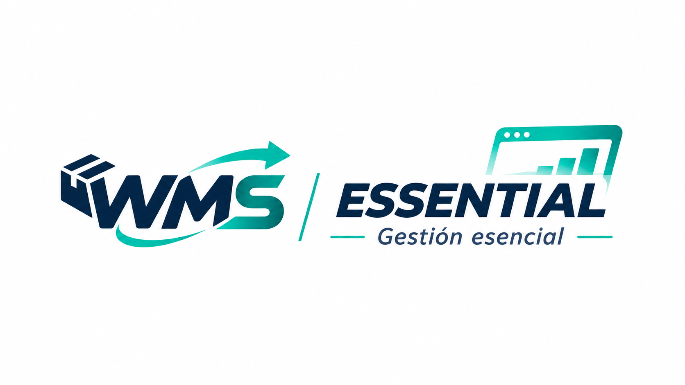

WMS Essential

El plan inicial para empresas que buscan digitalizar y organizar las operaciones principales de su depósito.
Funcionalidades incluidas
- Control de existencias.
- Gestión de ubicaciones.
- Recepción de mercadería.
- Preparación de pedidos.
- Consultas básicas de stock.